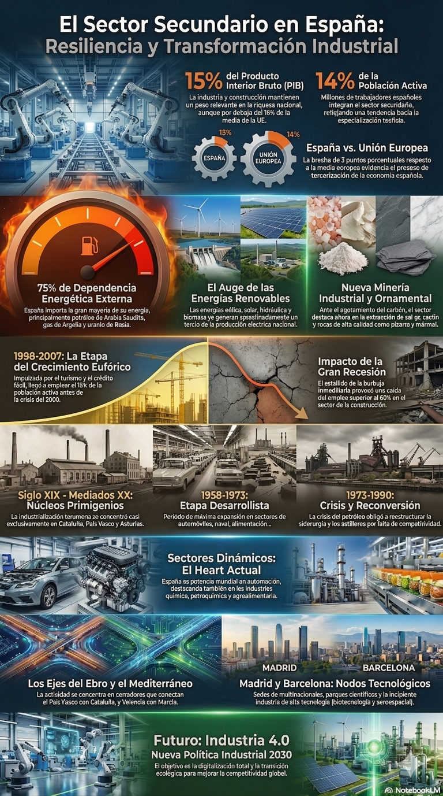
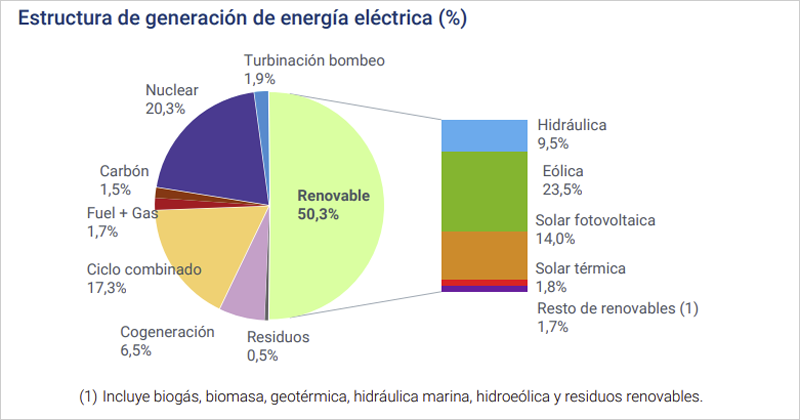

Navegación
Infografia

Mineria y recursos energéticos
El sector secundario desempeña un papel relevante, aunque decreciente, en la economía española. Actualmente, representa aproximadamente el 15% del Producto Interior Bruto (PIB) y emplea a cerca del 14% de la población activa. Estas cifras sitúan a España ligeramente por debajo de la media de la Unión Europea (18%), reflejando una clara tendencia hacia la terciarización de nuestra economía. A pesar de los retos globales, España se mantiene como una de las naciones más industrializadas del mundo, aunque su estructura productiva ha tenido que adaptarse profundamente a las crisis y a las nuevas exigencias tecnológicas.
La minería y el desafío energético
- España fue históricamente un país rico en recursos minerales, pero hoy vive una situación de alta dependencia externa. La mayoría de los yacimientos metálicos y de carbón se han agotado o su extracción resulta excesivamente cara, lo que ha provocado el cierre de casi todas las explotaciones mineras tradicionales.
En la actualidad, la actividad minera nacional se sostiene principalmente gracias a la extracción de minerales industriales (como la sal gema o el caolín) y rocas ornamentales de gran calidad, como la pizarra y el mármol, siendo España uno de los principales productores mundiales de estas últimas.
- En el ámbito energético, la situación es crítica debido a que el país importa cerca del 75% de la energía que consume, especialmente petróleo y gas natural. Los factores principales son:
.png)
- Incremento del consumo energético, debido a razones como el desarrollo económico y el aumento de la población (particularmente urbana).
- Escasa disponibilidad de determinados recursos energéticos, lo que explica que España importa. petróleo (Arabia Saudita), gas natural (Argelia) y uranio (Rusia), o compre energía eléctrica más asequible a países como Francia o Marruecos.
El consumo de Energías renovables se ha incrementado notablemente durante las últimas décadas, y aportan en la actualidad en torno a la tercera parte de la producción de energía eléctrica. Destacan la energía eólica, la hidráulica, la solar (fotovoltaica y termoeléctrica) y la biomasa, frente al descenso de las no renovables, en consonancia con el Pacto Verde Europeo.

Producción de energía en España en 2024.

La construcción en España
Evolución historica
El proceso de industrialización en España.
El proceso de industrialización arrancó en España de forma tardía, y afectó únicamente a algunos núcleos:
|
Periodo |
Características |
|
Mediados del siglo XIX y principios del XX |
Núcleos industriales en Cataluña, País Vasco y Asturias |
|
Etapa Desarrollista (1959-1973) |
Expansión de la industria, alcanza su mayor expansión en sectores como la construcción naval y de automóviles, la energía, la alimentación, etc. Consolidación en Cataluña y País Vasco |
|
1973-1990 |
Crisis del petróleo, reconversión industrial por falta de competitividad en la siderurgia y la industria naval (astilleros) |
|
Siglo XXI |
Expansión afectada por la Gran Recesión y la crisis del COVID |
Hoy en día, la industria española se divide en tres grandes bloques:
- Sectores tradicionales: Incluyen la siderurgia, la construcción naval, el textil, el calzado y el mueble. Son sectores maduros que han perdido peso y que intentan sobrevivir mediante la innovación y la calidad ante la competencia de países con costos más bajos.
- Sectores dinámicos: Son el corazón de la producción actual. Destacan la industria del automóvil (España es una potencia mundial en fabricación de vehículos), la química, la petroquímica y la agroalimentaria.
- Sectores de alta tecnología: Como la biotecnología, la industria aeroespacial y las TIC. Se han implantado con cierto retraso y dependencia notable de la tecnología extranjera, localizándose preferentemente en parques tecnológicos.
Localización y desequilibrios territoriales
La industria no se reparte de forma uniforme por el territorio, lo que genera grandes desigualdades. Los principales focos industriales se ubican en: